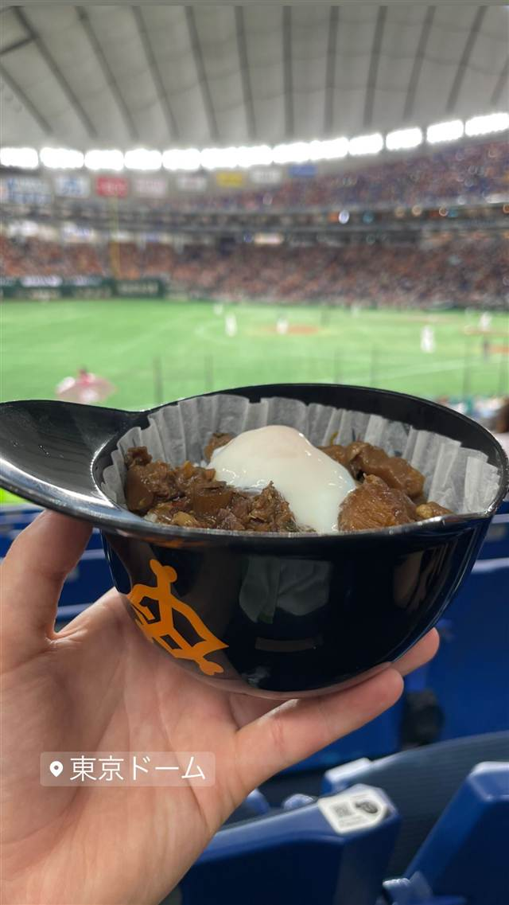

東京ドーム（球場内売店、店舗名不明）
対戦カードでデザインが変わる持ち帰りヘルメット丼
東京ドーム
TRIVIA
へえ、という話
- ヘルメットカップは食べ終わった後そのまま記念に持ち帰れる。
- 巨人ファン仕様・ヤクルトファン仕様など対戦カードでデザインが変わる。
| 看板 | GIANTSヘルメットカップグルメ（ヘルメット型カップに入った丼・炒飯・唐揚げ・スイーツなど） |
|---|---|
| 場所 | 水道橋 東京都文京区後楽1-3-61 |
| 注意 | 巨人戦開催時に球場内売店で販売。ヘルメット型カップはそのまま持ち帰り可能な記念グッズを兼ねる。 |
食べたもの：球場のヘルメット丼
NEARBY
近い店・同じ系統の店
-
 丼 六本木
鶏匠 たけはし
比内地鶏と卵、炊き立てご飯に絡む瞬間を大切にした親子丼
昼 ¥1,000～¥1,999 夜 ¥6,000～¥7,999
丼 六本木
鶏匠 たけはし
比内地鶏と卵、炊き立てご飯に絡む瞬間を大切にした親子丼
昼 ¥1,000～¥1,999 夜 ¥6,000～¥7,999
-
 丼 表参道駅
青山 鶏味座 本店(とりみくら)
幻の東京軍鶏を備長炭で焼き、自家製出汁のふわとろ卵をのせた究極の親子丼
夜 ¥4,000～¥4,999
丼 表参道駅
青山 鶏味座 本店(とりみくら)
幻の東京軍鶏を備長炭で焼き、自家製出汁のふわとろ卵をのせた究極の親子丼
夜 ¥4,000～¥4,999
-
 丼 八潮
Handicraft Works（ハンディクラフトワークス）八潮本店
油そばとブラジル料理シュラスコを融合したボルケーノパレット
昼 ¥1,000～¥1,999 夜 ¥1,000～¥1,999
丼 八潮
Handicraft Works（ハンディクラフトワークス）八潮本店
油そばとブラジル料理シュラスコを融合したボルケーノパレット
昼 ¥1,000～¥1,999 夜 ¥1,000～¥1,999
-
 丼 小田急片瀬江ノ島駅
江ノ島小屋
父が漁師で使っていた網小屋を改装した海鮮食堂のまかない丼
昼 ¥1,000～¥1,999 夜 ¥1,000～¥1,999
丼 小田急片瀬江ノ島駅
江ノ島小屋
父が漁師で使っていた網小屋を改装した海鮮食堂のまかない丼
昼 ¥1,000～¥1,999 夜 ¥1,000～¥1,999
-
 丼 恵比寿駅
#ヒロキヤ恵比寿
DJがプロデュース、1日40食限定の和牛ユッケ丼
昼 ¥1,000～¥1,999 夜 ¥8,000～¥9,999
丼 恵比寿駅
#ヒロキヤ恵比寿
DJがプロデュース、1日40食限定の和牛ユッケ丼
昼 ¥1,000～¥1,999 夜 ¥8,000～¥9,999
-
 丼 代官山
SIGN ALLDAY(サイン オールデイ)
駅直結で朝から夜まで通し営業、アサイーボウルとポキ丼
昼 ¥1,000～¥1,999 夜 ¥2,000～¥2,999
丼 代官山
SIGN ALLDAY(サイン オールデイ)
駅直結で朝から夜まで通し営業、アサイーボウルとポキ丼
昼 ¥1,000～¥1,999 夜 ¥2,000～¥2,999